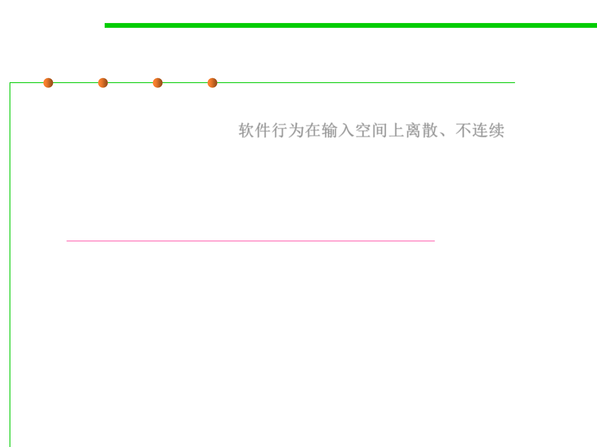

7.5 Testing and Test-First Programming
Why Software Testing is Hard
▪ Software behavior varies discontinuously and discretely across the
space of possible inputs. 软件行为在输入空间上离散、不连续
– The system may seem to work fine across a broad range of inputs, and
then abruptly fail at a single boundary point.
– The famous Pentium division bug(奔腾除法缺陷) affected approximately 1
in 9 billion divisions.
(http://www.willamette.edu/~mjaneba/pentprob.html)
– Stack overflows, out of memory errors, and numeric overflow bugs tend
to happen abruptly, and always in the same way, not with probabilistic
variation.
▪ That’s different from physical systems, where there is often visible
evidence that the system is approaching a failure point (cracks in a
bridge) or failures are distributed probabilistically near the failure
point (so that statistical testing will observe some failures even
before the point is reached).
▪ Software test cases must be chosen carefully and systematically